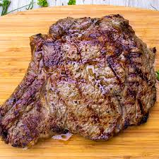

Steak

How to make the perfect steak
- First season the steak with a few different spices. My favorites are pepper, garlic salt, and greek seasoning, but you may have a different preference.
- Now heat up your pan, grill, etc and wait until it is hot to the touch. Then set the steak on the surface and wait until the edges start to gray then flip.
- After flipping the steak, wait and keep an eye on it. You'll need to flip it again. Check both sides now and then cook until it looks apealing.
- Grill
- Garlic Salt
- Greek Seasoning
- T-bone cut steak
- Time